Case file 001 / 2026
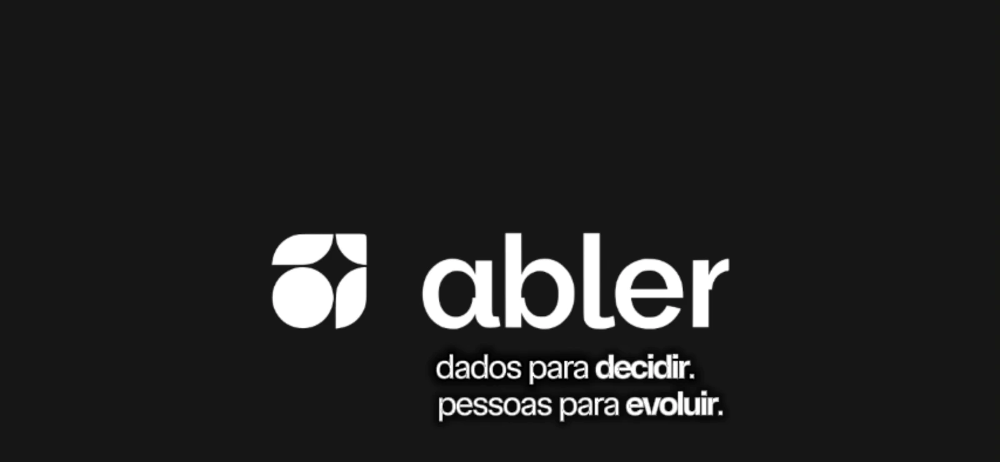
A New Brand of Intelligence
abler
Brand, product and AI in sync.
BrandAIContentProduct
I help brands turn ideas into content systems that create attention, drive engagement and support real business goals.

Brand, product and AI in sync.
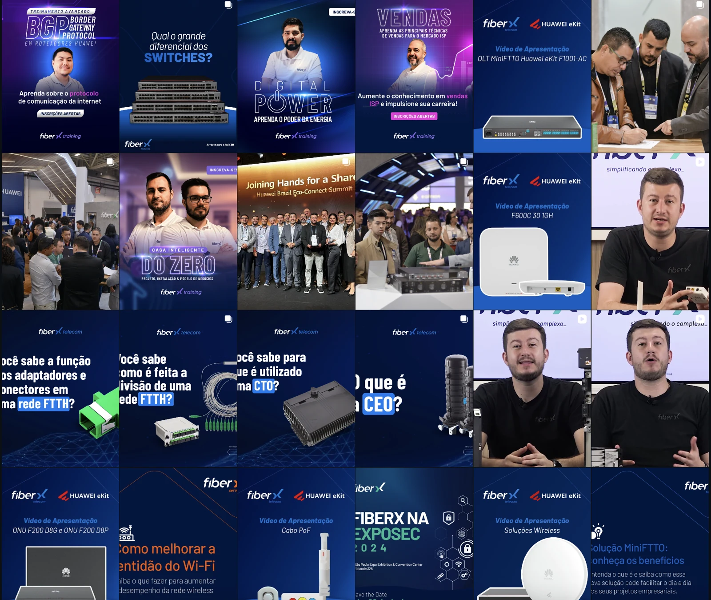
One system. Six brand voices.
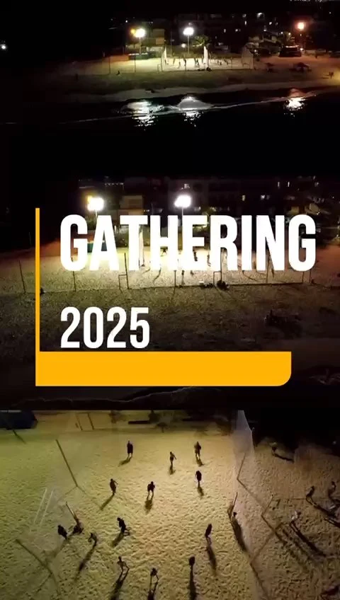
Brand language brought to motion.
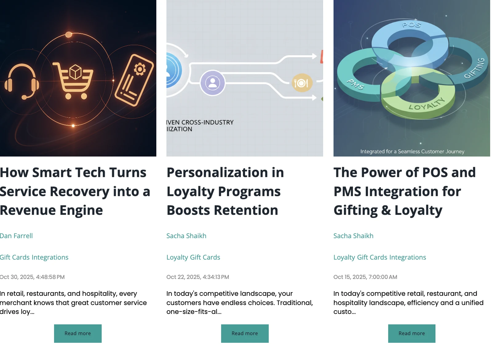
Content operations, scaled with AI.
I’ve worked across content strategy, social media, video, brand, campaigns and AI-assisted workflows. Over time, those areas stopped feeling separate and became part of the same thing: building systems that make communication clearer, more consistent and more useful.
Reframing the brand, the product narrative and the role of AI across content and launch strategy.
The brand was evolving alongside new product capabilities and a more visible role for AI.
Rebrand, product evolution and AI needed to feel like parts of the same movement.
Brand, product, content and launch were structured around one shared strategic logic.
I helped define how rebranding, product evolution and AI should be communicated as parts of the same story.
I turned capabilities into communication angles centered on relevance and user impact.
I structured how video, social, blog, email and launch assets would work together.
I worked on how AI should appear in product communication and in the content operation itself.
I helped guide tone, messaging logic and content direction across channels.
I worked across concepts, scripts, copy, campaign structure, flows and AI-assisted production.
My role was not to create isolated assets. It was to make sure every asset reinforced the same strategic story.
The campaign started with why the change mattered, not with what had just shipped.
Start with pain and context.
Explain why it matters.
Different formats, same story.
Useful, contextual, functional.
The identity needed to support a stronger technology-driven perception.
New features had to be translated into clear narratives, not listed as isolated updates.
AI needed a defined role in the product story and in the content operation.
The system was designed so each piece could stand on its own, while still making the next one stronger.
The system came to life across launch assets, video, social, product storytelling and AI-assisted workflows.
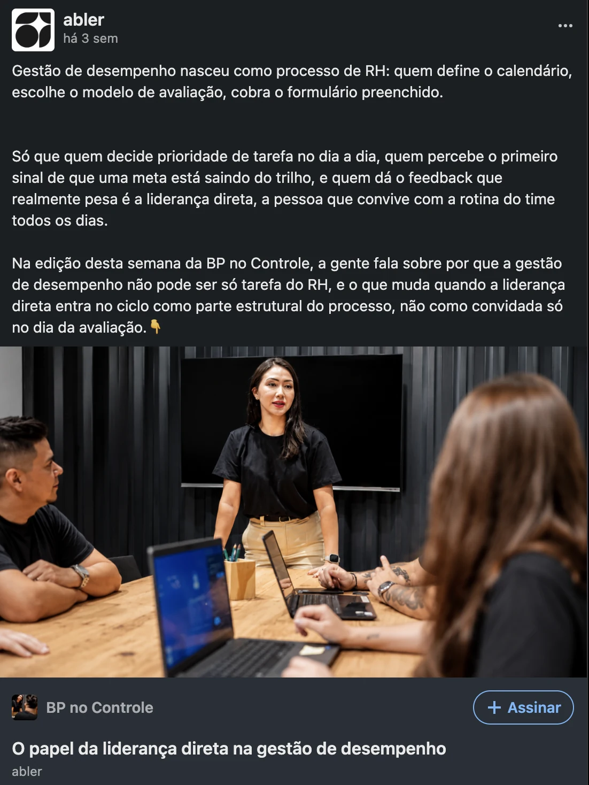
AI supported the operation by organizing context, accelerating iteration and helping scale the system without flattening the strategy.
Brand, product and launch began speaking the same language.
Different formats stopped operating as isolated pieces.
AI became part of the process and narrative, not a generic claim.
A stronger brand. A clearer story. A smarter system.
Next case: The Six Brands CaseBuilding a cohesive content system across six distinct brands, formats and creative needs.
Four brands shared one profile, while FiberX Renováveis and Velds had independent profiles.
The operation needed consistency without flattening each brand’s identity.
A shared structure supported different audiences, voices and distribution models.
Organizing themes, formats and publishing needs across multiple brands.
Adapting strategy to different tones, audiences and visual expectations.
Developing social content, scripts, concepts and video ideas across contexts.
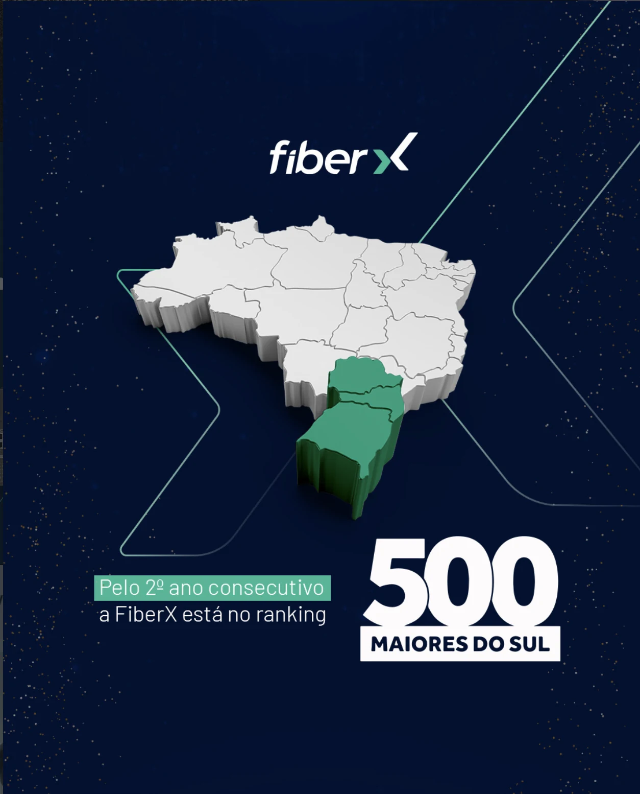
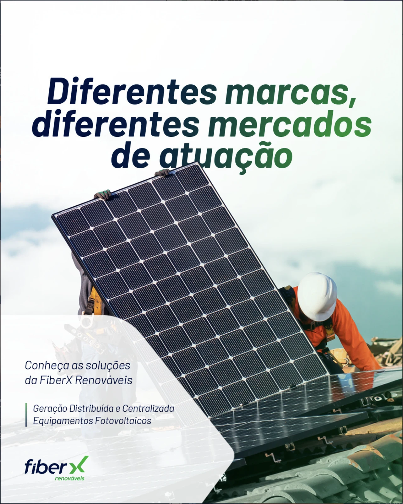
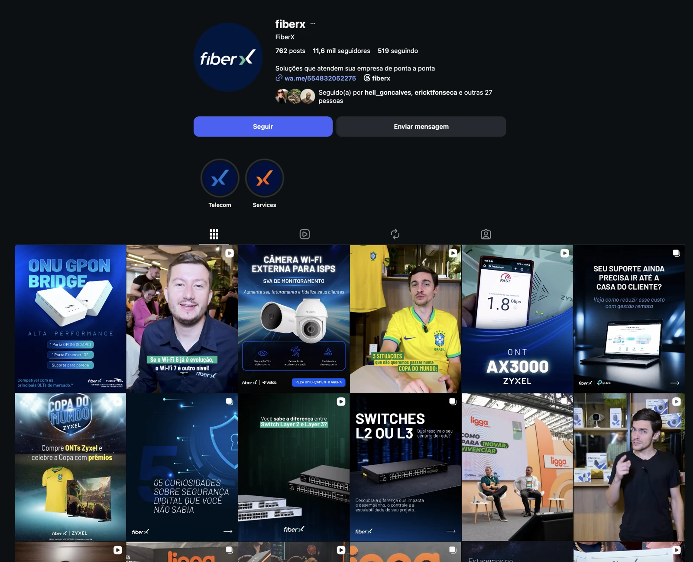
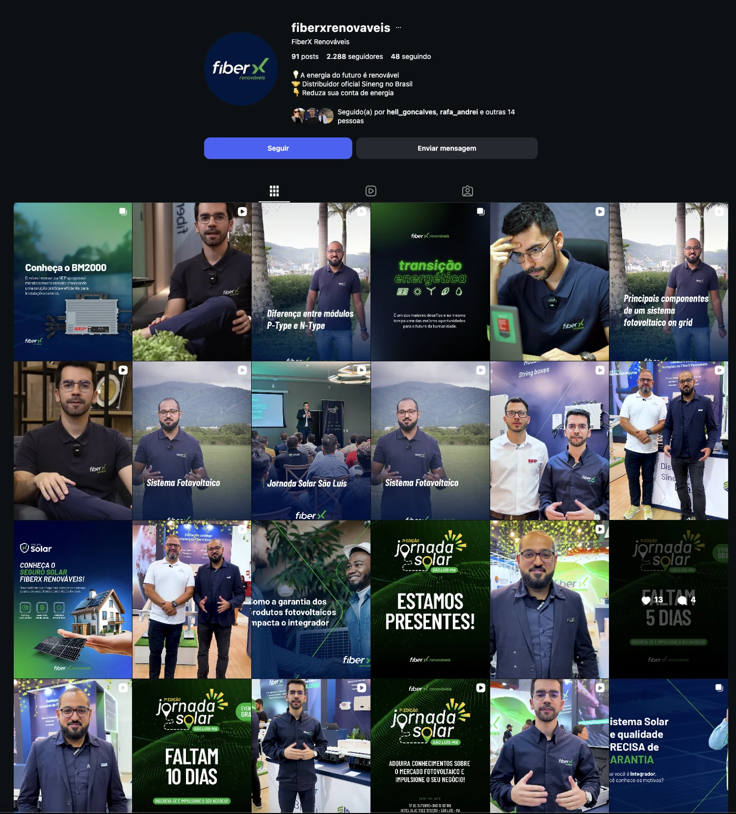
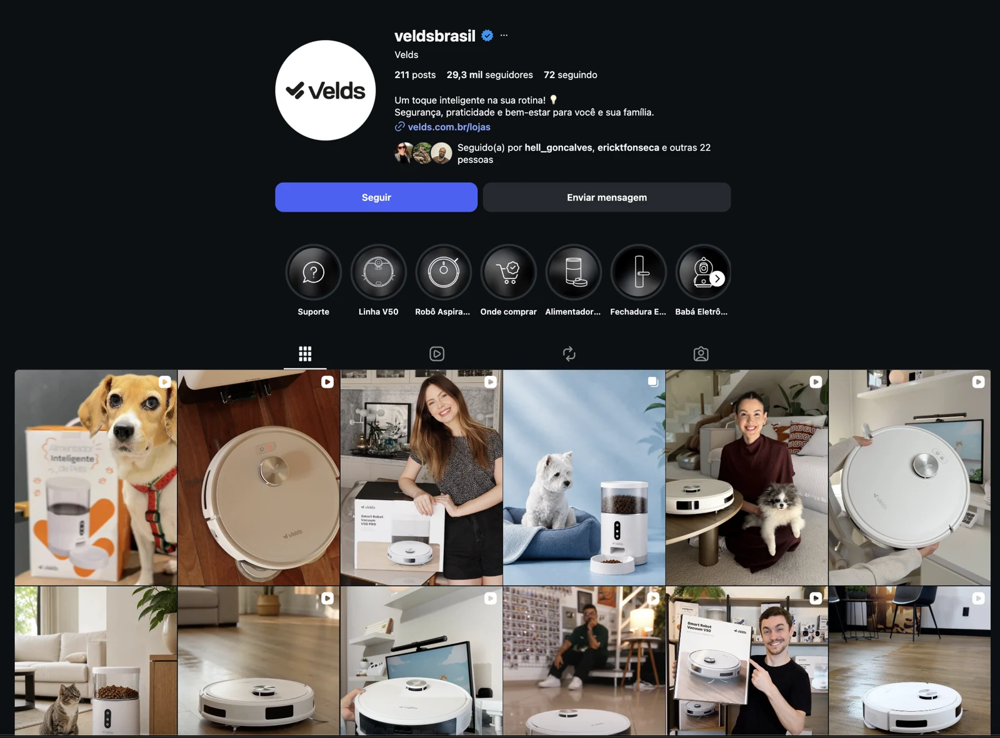
Six brands. Three profiles. One content operation.
Next case: Brand, Set, GoTurning brand language into campaigns, content and video with a clear creative direction.
An event experience needed to become a coherent audiovisual content series.
Each piece needed its own purpose while still feeling part of the same story.
The series extended the event through a consistent visual and narrative language.
Event → Angle → Script → Edit → Delivery
Film 01 / Gathering 2025
Film 02 / Gathering 2025
Film 03 / Gathering 2025
Film 04 / Gathering 2025
Four films. One event language.
Next case: Wrapped in IntelligenceBuilding a scalable international content operation across markets, powered by SEO, AI and automation.
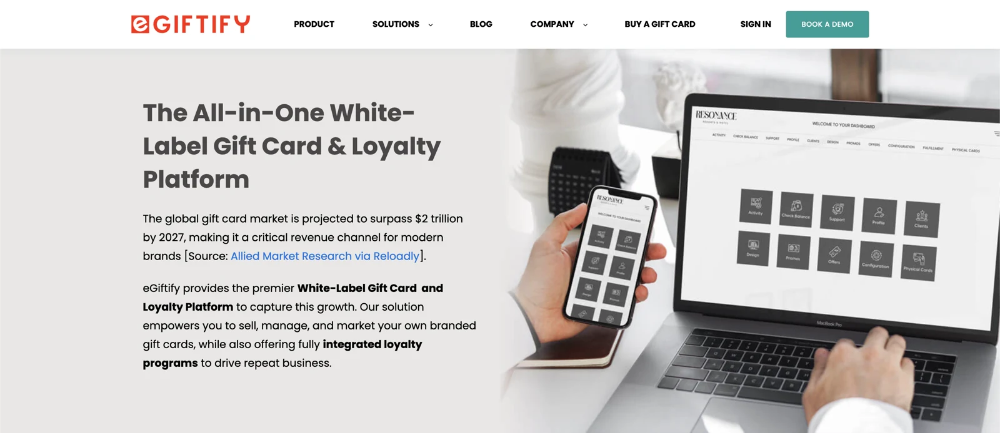
Content needed to work consistently across the US, Europe and Latin America.
The operation needed structure, governance and reusable workflows across markets.
A more structured and scalable international content operation.
Designing and consolidating scalable content systems across markets.
Establishing editorial systems, standards and quality frameworks.
Strengthening organic discoverability and generative search visibility.
Using custom GPTs, Gemini and structured knowledge bases to support production and decision-making.
Reducing manual work through reusable workflows and operational processes.
Connecting content, automation and performance logic into a more predictable operation.
AI supported repeatable workflows without replacing editorial standards or strategic judgment.
One content operation. Multiple markets.
All cases closed: What the evidence saysStrategy, creativity and systems working together, not as separate disciplines.
The pattern is the same: understand the problem, build the system, make the work.
Four cases closed. Ready for the next one.